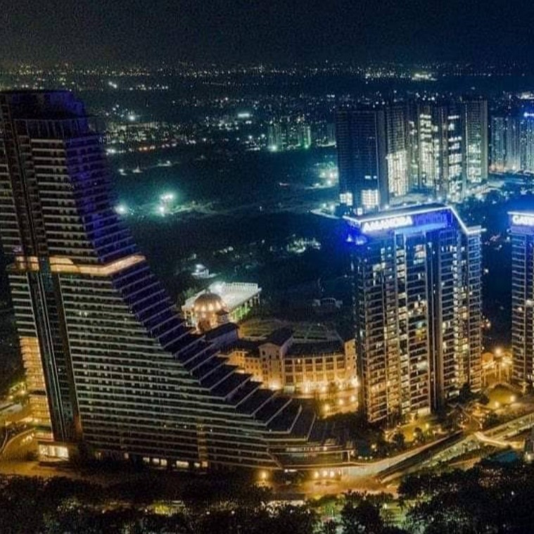
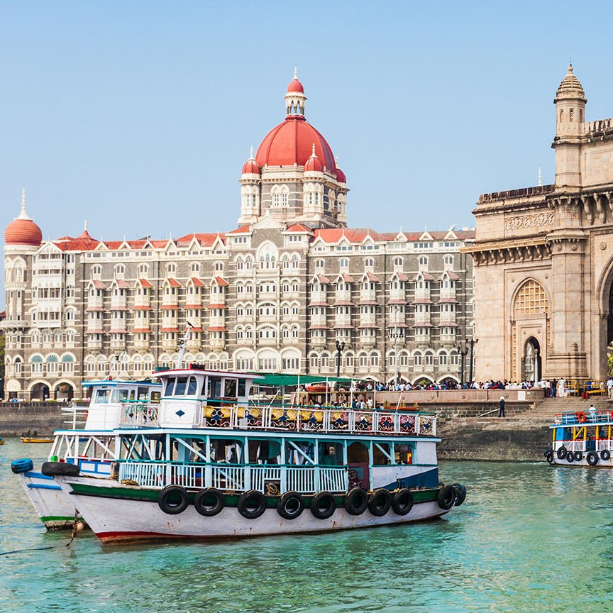
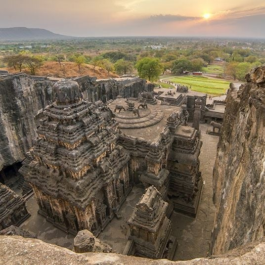

OUR BLOGS of Mumbai
Welcome to the blog of Global Getaways
Gateway of India
Mumbai, Maharashtra April 18, 2023
The Gateway of India is an arch-monument built in the early 20th century in the city of Mumbai (Bombay), India. It was erected to commemorate the landing of King-Emperor George V, the first British monarch to visit India, in December 1911 at Strand Road near Wellington Fountain. The Gateway is amongst the prime tourist attractions in Mumbai. The Gateway is a protected monument in Maharashtra under the aegis of the Archaeological Survey of India (ASI). It is a regular gathering place for locals, street vendors, and photographers. In 2012, the Maharashtra Tourism Development Corporation moved the Elephanta Festival of Music and Dance from its original location at Elephanta Caves — where it had been celebrated for 23 years — to the Gateway, due to the increased capacity offered by the venue. The Gateway can host 2,000 to 2,500 people, whereas Elephanta Caves could host only 700 to 800

MARINE DRIVE
Mumbai, Maharashtra April 18, 2023
Marine Drive is a 3 kilometre-long Promenade along the Netaji Subhash Chandra Bose Road in Mumbai, India. The road and promenade were constructed by Pallonji Mistry. It is a 'C'-shaped six-lane concrete road along the coast of a natural bay. At the northern end of Marine Drive is Girgaon Chowpatty and the adjacent road along links Nariman Point at southern tip to Babulnath and Malabar Hill at northern tip. Marine Drive is situated on reclaimed land facing west-south-west. Marine Drive is also known as the Queen's Necklace because, when viewed at night from an elevated point anywhere along the drive, the street lights resemble a string of pearls in a necklace.

Global Getaways
Your go-to blog and trip planning website for travel enthusiasts! Inspiring travel tips, destination guides, and practical tools to plan your dream trip. Join us on an exciting journey to explore the world, one getaway at a time!
Popular Posts
-

Pune
Welcome to Knowledge City -

Mumbai
Financial Capital of India -

Aurangabad
Historic City
Tags
Travel Pune Mumbai Satara Nagpur Kolapur Lonavala Navi Mumbai Solapur News Latur Amravati Sports Games